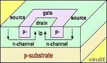

Junction
Field Effect Transistor or JFET
The
Junction Field Effect Transistor (JFET) is another type of FET, a basic
structure of which may consist of a semiconductor bar with ohmic
contacts at the end and heavily doped regions on its opposite sides.
If the semiconductor bar is made of n-type material, then it is an
n-channel JFET. The JFET is
p-channel if the bar is made of p-type
material.
The terminals at the ends of the bar correspond to the
source and drain of the JFET. The heavily doped regions on the
sides of the bar are connected to serve as the gate of the JFET.
Needless to say, the gate regions are doped to be of opposite type with
respect to the channel, so that a
p-n junction
is formed
between the
channel
and the
gate
regions.
By applying a
voltage across
the source and the drain of a JFET, current consisting of majority
carriers (electrons for an n-channel and holes for a p-channel) is
caused to flow through the channel. The current flowing through
the channel is controlled by applying a gate voltage Vgs that
reverse biases the p-n junction formed by the gate with respect to the
source. The higher the Vgs is, the more the p-n junction is
reverse-biased, and the wider the depletion region across the channel
becomes. The
wider depletion region results in a
narrower channel,
consequently constricting the flow of current through the channel.
Varying
Vgs
therefore varies the
current
through the
channel
for any given voltage across the source and the drain.
|
 |
|
Figure 1. Structure of a single-ended-geometry junction FET |
The JFET structure described
above is no longer practical to use because of the difficulty with
having to diffuse dopants from two opposite sides of a bar. Most
JFETs built onto IC's nowadays involve
single-ended geometries that
require doping for the gate from only one side of the channel, i.e., the
surface of the wafer. This is achieved by building the JFET on an
epitaxially grown channel over a doped substrate that acts as the second
gate.
The current through the
channel of a MOSFET or JFET consists of only the
majority carriers,
which is why FETs are referred to also as
unipolar transistors.
See Also:
What is a Semiconductor?; p-n Junction;
Diode;
Bipolar Transistor; MOSFET;
IC Manufacturing
HOME
Copyright
©
2001-2006
www.EESemi.com.
All Rights Reserved.